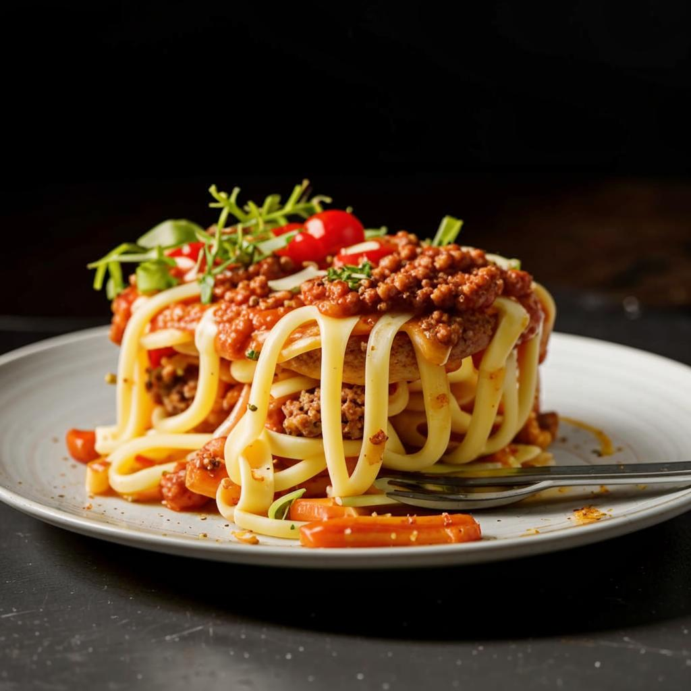

Лазанья

Индгридиенты
- Листы для лазаньи - 250 г
- Фарш мясной (говяжий) - 450 г
- Лук репчатый - 1 шт.
- Морковь - 1 шт.
- Томатный соус - 60 г
- Томатная паста - 60 г
- Масло сливочное - 60 г + 30 г
- Мука - 60 г
- Молоко - 800 мл
- Сыр пармезан - 120 г
- Мускатный орех - 1 ч. л.
- Соль - 2 ч. л.
- Перец молотый - 1 ч. л.
Способ приготовления
- Готовим соус бешамель.
В глубокой сковороде растопить сливочное масло (60 г),
добавить муку и, интенсивно помешивая, влить частями горячее молоко.
Приправить солью и мускатным орехом, довести до кипения, постоянно помешивая,
снять с огня.
- Готовим соус болоньезе. Репчатый лук мелко режем, морковь натираем на терке.
- В глубокой сковороде обжариваем лук на сливочном масле до полуготовности.
Добавляем к нему морковь, жарим около 5 минут.
- Затем добавляем фарш, посыпаем солью и перцем, хорошо перемешиваем.
Жарим на слабом огне еще около 10 минут.
- Далее добавляем томатный соус и томатную пасту.
Перемешиваем и готовим соус болоньезе еще 10 минут.
- На дно формы выкладываем часть соуса бешамель.
Укладываем на него лист лазаньи (обязательно обращайте внимание на инструкцию к готовым листам).
Затем выкладываем часть соуса болоньезе.
Поверх заливаем частью соуса бешамель и посыпаем тертым пармезаном.
- Повторяем слои до тех пор, пока все ингредиенты не будут использованы.
- Верхний слой листа лазаньи поливаем соусом бешамель и посыпаем пармезаном.
Запекаем лазанью в духовке около 40 минут при 180-190 градусах до образования золотистой корочки.
- Готовую лазанью вынимаем из духовки, даем постоять минут 10, а затем нарезаем на порции.
Украшаем и наслаждаемся!
Домой